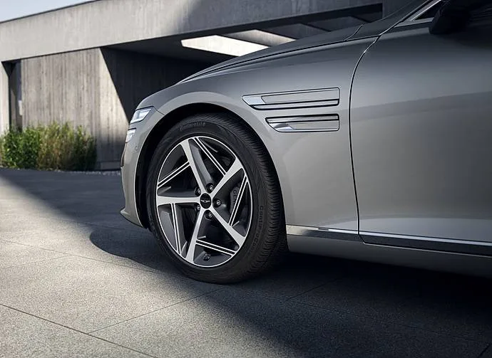
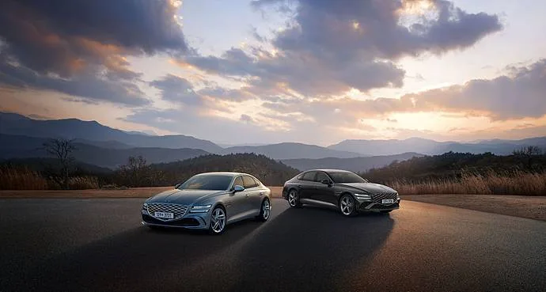

▲ 2026 G80. 외형보다 사양 구성의 재배치가 핵심인 연식변경이다
연식변경 보도자료는 대체로 비슷하게 읽힙니다. "고객 의견을 반영해 사양을 최적화했다"는 문장이 빠지지 않습니다.
그런데 이 문장에는 두 방향이 섞여 있습니다. 기본으로 올라온 사양과, 기본에서 빠져나간 사양이 함께 있다는 뜻이기 때문입니다. 2026 G80이 그 사례입니다.
1. 올라온 것 — 에르고 모션 시트
가장 눈에 띄는 변화는 운전석 에르고 모션 시트의 기본화입니다. 장시간 주행에서 자세를 미세하게 바꿔 주며 피로를 줄이는 기능입니다.
이 사양이 기본으로 올라온 것은 실질적인 개선입니다. 옵션으로 두면 선택률이 갈리는데, 기본이 되면 모든 구매자가 혜택을 받습니다. 특히 G80처럼 장거리 주행 비중이 높은 대형 세단에서는 체감이 큰 항목입니다.

▲ 휠과 펜더 가니시 등 외장 요소에서 고급감을 손봤다 ⓒ 제네시스
제네시스는 이번 연식변경의 방향을 "만족도가 높은 사양 위주의 기본 사양 최적화"와 "디자인 고급감 강화"로 설명했습니다. 에르고 모션 시트의 기본화가 앞쪽 설명에 해당합니다.
2. 옮겨간 것 — 항균 패키지
반대 방향의 변화도 있습니다. 기존에 기본 사양으로 운영하던 항균 패키지가 컨비니언스 패키지의 구성 사양으로 이동했습니다.
이것이 이번 연식변경에서 가장 실무적인 대목입니다. 항균 패키지를 원한다면 이제 컨비니언스 패키지를 함께 선택해야 합니다. 기본으로 받던 것을 옵션을 통해 받게 되는 구조입니다.
📍 사양이 "이동"할 때 확인할 것
기본 사양이 패키지로 옮겨가면 세 가지를 따져야 합니다.
① 그 패키지의 가격이 얼마인가
② 패키지에 함께 묶인 다른 사양이 내게 필요한가
③ 해당 사양 없이 지나갈 수 있는가
필요 없는 사양까지 묶어 사야 한다면, 표면적인 가격 인상이 없어도 실질 구매가는 오릅니다.
3. 합쳐진 것 — 파퓰러 패키지
세 번째 변화는 패키지 구조 자체입니다. 인기 사양을 조합해 Ⅰ·Ⅱ 두 갈래로 운영하던 파퓰러 패키지가 하나로 통합됐습니다.
제네시스는 통합의 취지를 합리적인 가격 제공으로 설명했습니다. 선택지를 단순화하면 소비자의 판단 부담이 줄고, 제조사는 생산 조합을 줄일 수 있습니다.
다만 통합에는 양면이 있습니다. 기존에 Ⅰ만 필요했던 구매자는 이제 통합된 패키지 전체를 선택해야 할 수 있습니다. 반대로 Ⅰ과 Ⅱ를 모두 넣던 구매자에게는 유리해집니다.
| 구분 | 이전 | 2026년형 |
|---|---|---|
| 에르고 모션 시트(운전석) | 옵션 성격 | 기본 |
| 항균 패키지 | 기본 | 컨비니언스 패키지 구성 |
| 파퓰러 패키지 | Ⅰ · Ⅱ 분리 | 하나로 통합 |
4. G80 블랙이라는 선택지

▲ 2026 G80과 G80 블랙이 함께 출시됐다 ⓒ 제네시스
2026 G80 블랙도 함께 나왔습니다. 블랙은 제네시스가 여러 모델에 운영하는 시리즈로, 외장과 내장의 요소를 어둡게 통일한 구성입니다.

▲ 에르고 모션 시트는 장거리 주행에서 체감이 큰 사양이다 ⓒ 제네시스
이런 특화 트림의 특징은 선택 과정이 단순해진다는 점입니다. 색상과 휠, 내장재 조합이 이미 정해져 있어 옵션 조합에 들일 시간이 줄어듭니다. 대신 개별 요소를 바꾸는 자유도는 낮아집니다.
5. 구매자가 실제로 확인할 것
연식변경 모델을 살 때 흔히 하는 실수가 있습니다. "새 연식이니 사양이 좋아졌겠지"라고 가정하는 것입니다.
실제로는 방향이 섞여 있습니다. 이번 G80처럼 하나가 기본으로 올라오고 다른 하나가 패키지로 내려가는 경우가 흔합니다. 총평은 좋아 보여도 내가 쓰는 사양이 어느 쪽으로 움직였는지가 중요합니다.
확인 순서는 이렇습니다. ① 내가 반드시 필요한 사양 목록을 먼저 적고 ② 그 사양이 이번 연식에서 기본인지 패키지인지 확인한 뒤 ③ 필요한 사양을 모두 갖춘 구성의 최종 견적을 이전 연식과 비교하는 것입니다.
정리하면 이렇습니다. 2026 G80의 변화는 사양의 양이 아니라 배치입니다. 에르고 모션 시트를 중시한다면 이득이고, 항균 패키지를 쓰던 구매자라면 계산이 달라집니다. 보도자료의 "최적화"라는 단어 뒤에는 늘 두 방향이 있습니다.